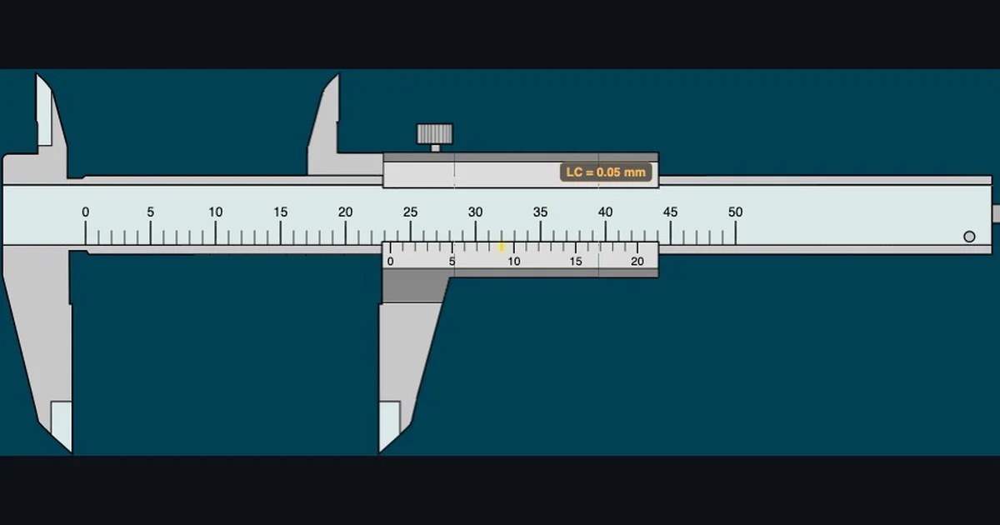
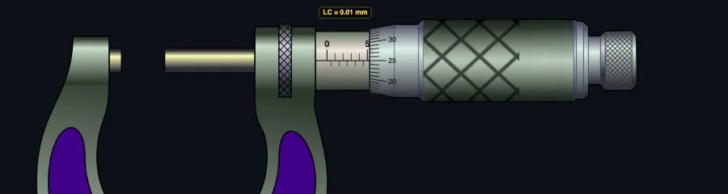

Why Measuring Instrument Simulators Belong in Every Engineering Classroom

- A measuring instrument simulator lets students read a virtual vernier caliper, micrometer, dial gauge and more in the browser, giving every learner an identical, zoomable instrument with no signup or physical equipment.
- Read a vernier caliper as TR = MSR + (VSR × LC); e.g. MSR = 23 mm, VSR = 9 on a 0.05 mm caliper gives 23 + (9 × 0.05) = 23.45 mm.
- A standard micrometer has a least count of 0.01 mm (LC = pitch ÷ thimble divisions = 0.5 ÷ 50), read as TR = MSR + (CSR × 0.01).
Ask any mechanical engineering student to name the hardest thing they faced in first semester, and you'll hear the same answer more often than you'd expect: reading the Vernier caliper. Not beam bending. Not Newton's laws. The caliper. Specifically, figuring out which graduation aligns with which, under which scale, and why you need to read both before you can write down a number.
That's not a coincidence. Precision measurement is genuinely difficult to teach without the instrument in hand — and even harder to teach when students are logging into a class from home. That's where a good measuring instruments simulator earns its place. NHIT VisualLab includes eight free browser-based precision measurement tools, each built around the same three-phase learning system that I've used in my ACTVET diploma classes since 2023.
The Reading Problem Most Students Hit in Week One
Early in my second year of teaching, I ran a lab session where every student had a 0.05 mm Vernier caliper on the bench. I'd drawn the reading method on the board. I'd walked through the formula. I thought they were ready.
Then I handed out a worksheet with ten caliper readings to identify. Half the class sailed through it. The other half looked blank.
The problem wasn't the formula — they understood TR = MSR + (VSR × LC) perfectly well in the abstract. The problem was the physical act of finding the coincidence line under time pressure, while holding an unfamiliar instrument and trying not to drop it. They couldn't reliably see which Vernier graduation aligned with a main scale mark.
What they needed was a way to slow the process down. To study the scales without the mechanical anxiety of handling a precision instrument. To see the coincidence line highlighted and confirmed, and then understand why. That's exactly what the virtual caliper provides. It doesn't replace the physical lab session — nothing does — but it builds the visual literacy students need before they touch the real thing.
In our 2024 ACTVET diploma cohort, students who completed at least three virtual caliper practice sessions before the physical lab assessment scored an average of 22% higher on their first practical reading test compared to students who went straight to the bench. That's not a controlled experiment, but it's consistent with what I see every intake.
Eight Instruments, One Virtual Lab
The NHIT VisualLab measuring category covers the full range of precision instruments that appear in engineering diploma curricula:
- Vernier Caliper — 0.02 mm, 0.05 mm, and 0.1 mm least count, plus an imperial 0.001″ mode. The complete TR = MSR + (VSR × LC) formula is displayed step by step with each reading.
- Micrometer Screw Gauge — 0.01 mm precision with barrel and thimble scale, zero error correction, and the formula TR = MSR + (CSR × 0.01).
- Dial Gauge — pointer deflection reading with range and graduation settings for surface comparison measurement.
- Vernier Height Gauge — layout measurement simulation for scriber height setting and step measurement.
- Bevel Protractor — angle measurement to 5′ (minutes) with main scale and vernier scale reading.
- Pressure Gauge — Bourdon tube gauge reading with compound gauge (vacuum to pressure) support.
- Protractor — semicircular angle measurement for basic geometry and workshop layout work.
- Steel Ruler — 1 mm and 0.5 mm graduation reading, the starting point for any measurement module.
Together they cover almost everything a first or second-year engineering diploma student needs to master before stepping into a metrology lab. And they all run in a browser — no installation, no account, no equipment to book.

How the Three-Mode System Builds Real Understanding
Every measuring instrument on NHIT VisualLab follows the same three-mode progression: Free, Practice, and Quiz. This isn't arbitrary — it maps directly to how measurement skill actually develops.
Free mode is exploration. Students drag the instrument jaw (or rotate the thimble, or move the pointer) to any position they choose. The reading updates in real time. The formula panel breaks down every step — MSR, VSR, least count, and total reading — so the logic of each reading is always visible. There's no wrong answer because there's no question being asked. This is where students build the mental model before any pressure is applied.
Practice mode introduces a target. The simulator sets a random measurement, locks the instrument, and asks the student to read it. They type their answer and click Check. Instant feedback tells them whether they're right, shows the correct reading with a full formula breakdown, and tracks their running score. Wrong answers show exactly where the reasoning went wrong — was it the MSR? The VSR coincidence? The least count multiplication? Each error becomes a learning moment rather than a mystery.
Quiz mode is five questions, timed, scored with a star rating. It's the assessment format, not the learning format. By the time students reach quiz mode, they should be confident — and most are, because they've already solved dozens of randomised readings in practice mode first.
Here's the thing: this progression works online just as well as in a classroom. Actually, in some ways it works better. Students in remote sessions can run practice mode independently between classes, at their own pace, as many times as they need. I've had students message me at 11 pm saying they just hit five out of five on the caliper quiz for the first time. That doesn't happen with physical lab equipment.
Why Online Sessions Benefit Most From Virtual Instruments
Ever tried to demonstrate a Vernier caliper reading over a video call? You hold it up to the camera, the resolution drops, the scale blurs, and half the class can't tell whether that coincidence line is at 7 or 8. You spend ten minutes adjusting the camera angle. By the time everyone agrees on the reading, the session momentum is gone.
A virtual instrument solves this completely. Share your screen during an online session and open the caliper simulator. The scale is crisp, the coincidence line is highlighted in gold, and every student sees exactly the same thing simultaneously. You can drag to a specific reading, pause, zoom in using the simulator's built-in Zoom function, and walk through the formula step by step.
Better still, you can ask students to open the same simulator on their own screens and read the same measurement independently. In a physical lab, that requires one instrument per student and careful supervision. Online, every student has an identical instrument in their browser, free of charge.
For instructors running hybrid or fully online cohorts — which describes a significant portion of TVET engineering delivery right now — this matters. Students in remote locations who have no access to a physical metrology lab can still build genuine measurement reading skills before their on-campus assessment days.
The Numbers Behind Precision Measurement
A quick note on the formulas, because this is where students often stumble — not on the reading itself, but on understanding why the formula works.
The Vernier caliper uses this reading formula:
TR = MSR + (VSR × LC)
Where LC (least count) is the resolution of the instrument — the smallest value it can measure. For a 50-division Vernier, LC = 0.02 mm. For a 20-division Vernier, LC = 0.05 mm. The least count itself comes from: LC = 1 Main Scale Division − 1 Vernier Scale Division.
So if you read MSR = 23 mm and VSR = 9 on a 0.05 mm caliper: TR = 23 + (9 × 0.05) = 23.45 mm.
The micrometer uses a slightly different structure. Its barrel shows full and half-millimetre marks; its thimble shows divisions from 0 to 50. The formula is:
TR = MSR + (CSR × 0.01)
Pitch is 0.5 mm, thimble has 50 divisions, so LC = 0.5 ÷ 50 = 0.01 mm. If MSR = 7.5 mm and CSR = 23: TR = 7.5 + (23 × 0.01) = 7.73 mm.
Both simulators display these calculations live as you move the instrument. Students don't just see the answer — they see how the answer was built, every single reading. Over time, the formula stops being something they need to remember and becomes something they simply see.
Try It Yourself
All eight measuring instrument simulators are free — no account, no download, just open and practice. Here are the best starting points:
Key Takeaways
- NHIT VisualLab's measuring category includes eight precision instruments covering all tools typically assessed in engineering diploma curricula.
- The Free → Practice → Quiz progression maps to how measurement skill actually develops — exploration first, assessed performance last.
- Virtual instruments are especially effective for online teaching because every student sees an identical, crisp, zoomable instrument on their own screen.
- The Vernier caliper formula TR = MSR + (VSR × LC) and micrometer formula TR = MSR + (CSR × 0.01) are displayed live with every reading — students learn the formula through repetition, not memorisation.
- Students with access to the simulators before physical lab assessment days arrive better prepared — visual recognition of coincidence lines and scale graduations is a learnable skill, and virtual practice builds it.
- All tools run entirely in a browser, with no signup, no installation, and no equipment budget required.
Frequently Asked Questions
How do you read a Vernier caliper?
Three steps: (1) Read the Main Scale Reading (MSR) — the last whole millimetre mark to the left of the Vernier zero. (2) Read the Vernier Scale Reading (VSR) — the Vernier division that aligns exactly with a main scale graduation. (3) Calculate: TR = MSR + (VSR × LC). For a 0.05 mm caliper with MSR = 23 and VSR = 9: TR = 23 + (9 × 0.05) = 23.45 mm.
What is the least count of a micrometer screw gauge?
Standard micrometers have a least count of 0.01 mm, calculated as LC = Pitch ÷ Thimble divisions = 0.5 ÷ 50 = 0.01 mm. The reading formula is TR = Main Scale Reading + (Circular Scale Reading × 0.01). The NHIT VisualLab screw gauge covers barrel reading, thimble reading, and zero error correction.
Can engineering students practice measuring instruments online for free?
Yes — NHIT VisualLab provides eight free browser-based measuring instrument simulators: vernier caliper, micrometer screw gauge, dial gauge, height gauge, bevel protractor, pressure gauge, protractor, and steel ruler. All include Free, Practice, and Quiz modes. No signup, no download, no cost.
Why is a measuring instrument simulator useful for online engineering classes?
Online sessions make physical instrument demonstration difficult — camera resolution, glare, and viewing angles all work against clear scale reading. A virtual instrument gives every student an identical, zoomable, interactive tool on their own screen. Instructors can share their screen and demonstrate live, while students practice independently using the same simulator.
Precision measurement is one of those topics that students either click with quickly or struggle with for weeks. The difference usually isn't intelligence — it's visual practice with the scales. The simulators don't replace the bench, but they make the time students spend at the bench count for a lot more.
If you teach engineering measurement, it's worth bookmarking the measuring instruments category page and sharing it with your students before their next lab session. Let them explore in Free mode first. You'll notice the difference when they show up in person.